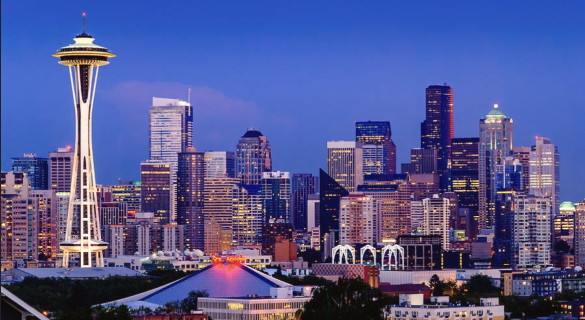

Anchorage, AK
Nicknames: "City of Lights and Flowers", "Los Anchorage"
Landmarks: Anchorage Museum, Chugach State Park
Description: The largest city in Alaska, where urban life coexists with the wild. Located near the Arctic Circle, it's also a popular spot for aurora viewing.
Atlanta, GA

Nicknames: "The ATL", "Black Hollywood", "City in a Forest"
Landmarks: Georgia Aquarium, Martin Luther King Jr. National Historical Park
Description: A cultural and economic hub of the American South, known for its lush greenery and thriving film industry.
Austin, TX
Nicknames: "Live Music Capital of the World", "Bat City"
Landmarks: Texas State Capitol, Congress Avenue Bridge
Description: A vibrant city celebrated for its diverse music and arts scene, hosting numerous festivals throughout the year.
Baltimore, MD
Nickname: "Charm City"
Landmarks: Inner Harbor, Fort McHenry National Monument
Description: A historic port city known as the birthplace of the U.S. national anthem, rich in history and maritime culture.
Boston, MA
Nicknames: "The Hub", "The Cradle of Liberty", "Athens of America"
Landmarks: Fenway Park, Freedom Trail
Description: A historic city central to the American Revolution, known for its rich history and academic traditions.
Charlotte, NC
Nickname: "Queen City"
Landmarks: Bank of America Stadium, NASCAR Hall of Fame
Description: A rapidly growing city and financial center, also known for its vibrant sports and cultural scene.
Chicago, IL
Nicknames: "Windy City", "City of Big Shoulders"
Landmarks: Willis Tower, Millennium Park
Description: A major city on the shores of Lake Michigan, known for its iconic architecture and jazz heritage.
Cincinnati, OH
Nicknames: "Porkopolis", "Queen City"
Landmarks: Cincinnati Zoo & Botanical Garden, Carew Tower
Description: A city on the Ohio River, rich in historic architecture and artistic culture.
Cleveland, OH
Nicknames: "The Forest City", "The Land"
Landmarks: Rock and Roll Hall of Fame, Cleveland Museum of Art
Description: An industrial city on the Great Lakes, also known as a cultural hub for music and the arts.
Columbus, OH
Nickname: "Arch City"
Landmarks: Ohio State University, Schottenstein Center
Description: The capital of Ohio, a dynamic city with a strong focus on education and the tech industry.
Dallas, TX
Nickname: "Big D"
Landmarks: Reunion Tower, Dealey Plaza
Description: The economic hub of North Texas, known for its modern skyline and rich cultural amenities.
Denver, CO
Nickname: "Mile High City"
Landmarks: Red Rocks Amphitheatre, Union Station
Description: Located at the foot of the Rocky Mountains, the city is known for outdoor recreation and a vibrant arts scene.
Detroit, MI
Nickname: "Motor City"
Landmarks: GM Renaissance Center, MotorCity Casino Hotel
Description: The heart of the American auto industry and the birthplace of Motown music.
Honolulu, HI
Nickname: "The Big Pineapple"
Landmarks: Diamond Head, Waikiki Beach
Description: The capital of Hawaii, known for its stunning beaches and rich cultural heritage.
Houston, TX
Nickname: "Space City"
Landmarks: NASA Johnson Space Center, Museum of Fine Arts Houston
Description: A major center for space exploration and the energy industry, offering diverse culture and cuisine.
Indianapolis, IN
Nickname: "Circle City"
Landmarks: Indianapolis Motor Speedway, Soldiers and Sailors Monument
Description: Famous for the Indy 500, it blends sports heritage with a growing cultural scene.
Jacksonville, FL
Nickname: "The River City"
Landmarks: St. Johns River, Riverwalk, Cummer Museum of Art and Gardens
Description: The largest city by land area in the continental U.S., Jacksonville is a key center in Northeast Florida known for its beaches, golf courses, and military presence.
Kansas City, MO
Nickname: "City of Fountains"
Landmarks: Country Club Plaza, Union Station
Description: A cultural hub known for its fountains, jazz heritage, and world-famous barbecue.
Las Vegas, NV
Nickname: "Sin City"
Landmarks: "Welcome to Fabulous Las Vegas" sign, The Strip
Description: A global tourist destination renowned for its dazzling casinos and entertainment.
Los Angeles, CA
Nickname: "City of Angels"
Landmarks: Hollywood Sign, Griffith Observatory
Description: The heart of the film industry, this sprawling city thrives with cultural and artistic diversity.
Memphis, TN
Nickname: "Home of the Blues"
Landmarks: Graceland, Beale Street
Description: A musical city celebrated as the birthplace of blues and rock 'n' roll.
Miami, FL

Nickname: "Magic City"
Landmarks: South Beach, Art Deco District
Description: A vibrant city where diverse cultures blend, famous for its lively beaches and nightlife.
Milwaukee, WI
Nickname: "Brew City"
Landmarks: Milwaukee Art Museum, Harley-Davidson Museum
Description: A historic hub of the beer industry, boasting a strong cultural and artistic presence.
Minneapolis, MN
Nickname: "City of Lakes"
Landmarks: Chain of Lakes, Walker Art Center
Description: Known for its numerous lakes and parks, this city thrives on art and music.
Nashville, TN
Nickname: "Music City"
Landmarks: Country Music Hall of Fame, Ryman Auditorium
Description: The heart of country music, offering a wide range of live performances.
New Orleans, LA
Nickname: "The Big Easy"
Landmarks: French Quarter, Bourbon Street
Description: A city known for jazz, Mardi Gras, and its rich and unique cultural heritage.
New York City, NY
Nickname: "The Big Apple"
Landmarks: Statue of Liberty, Empire State Building
Description: A global capital of culture, finance, and the arts, where diverse cultures converge.
Oakland, CA
Nickname: "The Town"
Landmarks: Lake Merritt, Oakland Museum of California
Description: A culturally rich city with a dynamic arts scene and vibrant communities.
Orlando, FL
Nickname: "The Theme Park Capital of the World"
Landmarks: Walt Disney World, Universal Studios
Description: A global tourist destination packed with world-renowned theme parks, serving as Florida’s premier entertainment hub year-round.
Oklahoma City, OK
Nickname: "The Big Friendly"
Landmarks: Oklahoma City National Memorial, Bricktown
Description: A welcoming city blending Western heritage with energy industry roots.
Philadelphia, PA
Nickname: "The City of Brotherly Love"
Landmarks: Liberty Bell, Independence Hall
Description: The birthplace of American independence, steeped in history and culture.
Phoenix, AZ

Nickname: "Valley of the Sun"
Landmarks: Papago Park, Phoenix Art Museum
Description: A desert city known for its warm climate and luxurious resorts.
Pittsburgh, PA
Nickname: "Steel City"
Landmarks: University of Pittsburgh, Carnegie Museum of Art
Description: Once a steel industry stronghold, now a center for technology and education.
Portland, OR
Nickname: "City of Roses"
Landmarks: Washington Park, Portland Japanese Garden
Description: A green city where nature and urban life harmonize, known for its eco-conscious culture and arts.
Salt Lake City, UT
Nickname: "Crossroads of the West"
Landmarks: Mormon Temple, Great Salt Lake
Description: The headquarters of the LDS Church, surrounded by stunning landscapes and ski resorts.
San Antonio, TX
Nickname: "Alamo City"
Landmarks: The Alamo, River Walk
Description: Known for its historic battleground and scenic riverside pathways.
San Diego, CA
Nickname: "America's Finest City"
Landmarks: Balboa Park, San Diego Zoo
Description: A signature city of Southern California, known for its mild climate, stunning beaches, major naval base, and thriving biotech industry.
San Francisco, CA
Nickname: "The Golden City"
Landmarks: Golden Gate Bridge, Alcatraz Island
Description: A city of hills and coastlines, known as a symbol of technological innovation and liberal culture.
San Jose, CA
Nickname: "Capital of Silicon Valley"
Landmarks: Winchester Mystery House, The Tech Interactive
Description: The heart of Silicon Valley, home to a high concentration of cutting-edge tech companies.
Seattle, WA

Nickname: "Emerald City"
Landmarks: Space Needle, Pike Place Market
Description: The birthplace of Amazon and Starbucks, known for its rainy weather and rich coffee culture.
St. Louis, MO
Nickname: "Gateway to the West"
Landmarks: Gateway Arch, Forest Park
Description: A historic launching point of westward expansion, also known for its jazz and baseball traditions.
St. Paul, MN
Nickname: "Twin Cities" (with Minneapolis)
Landmarks: Cathedral of Saint Paul, Minnesota State Capitol
Description: The capital of Minnesota and a cultural and educational hub, paired with Minneapolis.
Tampa Bay, FL
Nickname: "Cigar City"
Landmarks: Busch Gardens, Ybor City
Description: A warm, coastal city in Florida known for its leisure activities and historic cigar-making heritage.
Washington, D.C.
Nicknames: "The District", "Capital City"
Landmarks: The White House, U.S. Capitol, Washington Monument
Description: The capital of the United States, packed with history, politics, and world-class museums.